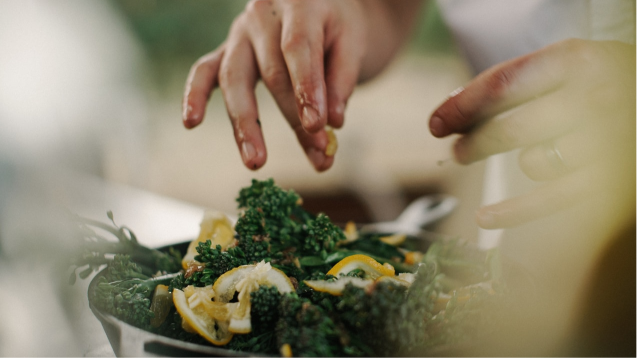

Part I: 5 Easy, Healhty Mediterranean recipes
Taught through live cook-a-longs and on-demand videos, you will master everything from soups and side-dishes to fish and shrimp. Emerge a stronger and more confident cook -- no matter your PCOS type.

Part II: Meal Plan, Grocery Lists and Expert Information on PCOS
You will be getting access to Dr. Faris' verified grocery shopping lists and sample PCOS-friendly meal plan. You will also get personalized feedback, Q+A and credible content on managing PCOS.